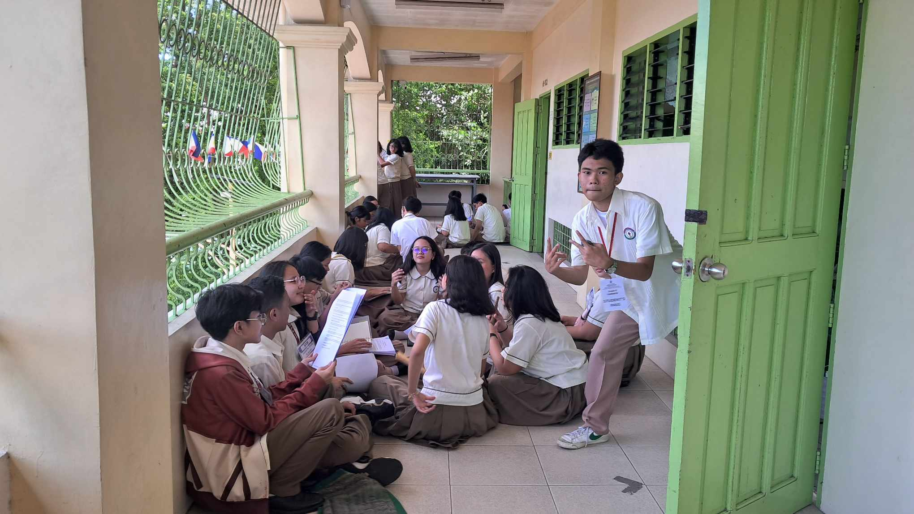
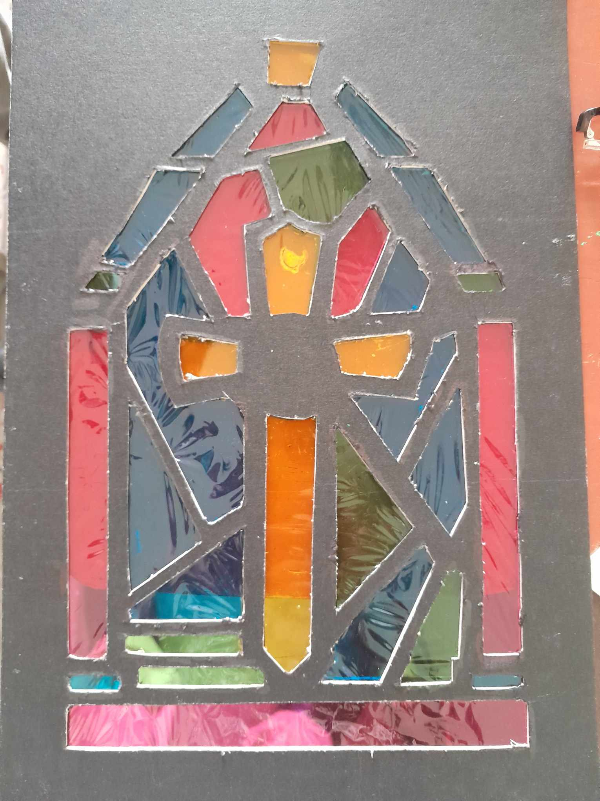

Date of Presentation: August 8, 2024

Source: John Riz D. Dancal

Source: Sofia Angela V. Chua
Date of Grading: September 6, 2024

Source: Sofia Angela V. Chua
Play Music for Relaxing Experience.(LOTR Music: Sound of the Shire)
| Activity | Date | Description | Image |
|---|---|---|---|
| Buwan ng Wika Opening | August 5, 2024 | The Buwan ng Wika Opening introduced all the Filipino activities for the month and featured lapsicians playing music and dancing. | |
| Science Human (Organ System) Simulation | Date of Practice: August 7, 2024 Date of Presentation: August 8, 2024 |
Lapiscians have to recreate the Cardiovascular System and Respiratory System. (The following image is among one of the numerous practices done by Fairness.) |  |
| School-based Declamation Competition | August 20, 2024 | The school-based declamation competition was held in the school auditorium. One representative was chosen from each Grade 9 section. (The following image features John Riz D. Dancal, the representative for 9-Fairness.) | Source: John Riz D. Dancal |
| English Conditionals Song | August 20, 2024 | The English Song Performance was about the different types of conditionals. Our group was assigned with "zero conditionals," which means we have to use present tense all throughout the song. | |
| LPSci 15th Foundation Day | August 24, 2024 | The LPSci Community celebrated its 15th year as an educational institution for students who excel in academics, especially in the field of Science and Math. This day had many well-planned booths and events, including food stands, Basketball and Volleyball games, raffles to win prizes, club booths, and more! | Source: Sofia Angela V. Chua |
| MAPEH Stained Glass Activity | Submission Date: August 30, 2024 Date of Grading: September 6, 2024 |
The MAPEH Stained Glass activity is a performance task where we cut designs on two illustrations boards and use them to sandwich different colors of cellophane to create a beautiful recreation of stained glass art of the past, usually showing religious symbols or depictions. |  |
| Filipino Debate | September 13, 2024 | The Filipino Debate was an intellectual battle among different groups of students who were given the chance to decide on the topic. Groups 1 and 2 debated about the idea of allowing contraceptives to be sold in school while Groups 3 and 4 debated about the valedictorian system. | Source: Sofia Angela V. Chua |
| MAPEH Music Video | September 23, 2024 | The MAPEH Music Video was created to bring awareness to people about our environmental issues. The students were divided into 5 groups and they can create a song parody or create an original song. |